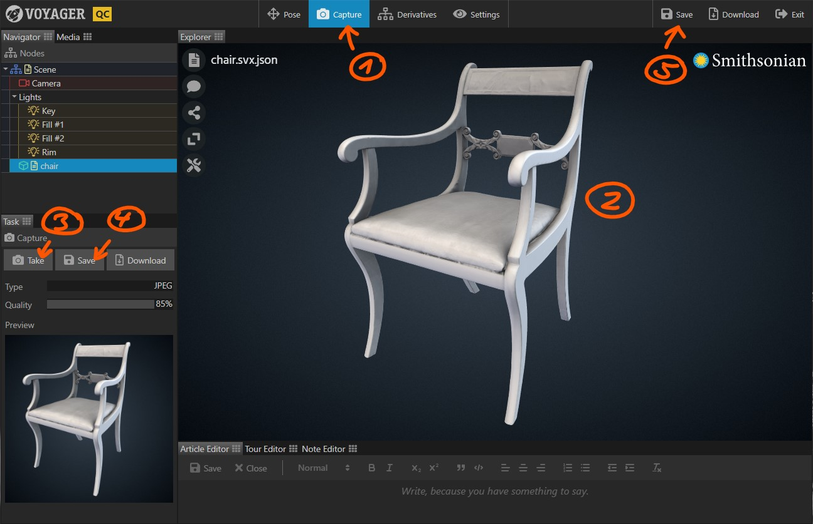

Use the Capture Task to create 2D snapshots of your 3D scene.
The Capture Task is only available if Voyager Story is started in QC mode.
- Select the Task in the task bar.
- Drag the view (orientation: left mouse button, pan: right mouse button, zoom: scroll wheel) until you’re happy with the scene view.
- Click to take a snapshot. The snapshot appears in the task panel.
- Click to save the snapshot back to the server.
- Click in the top right to save the scene.
You can use the button next to the button to save a local copy of the captured image.
